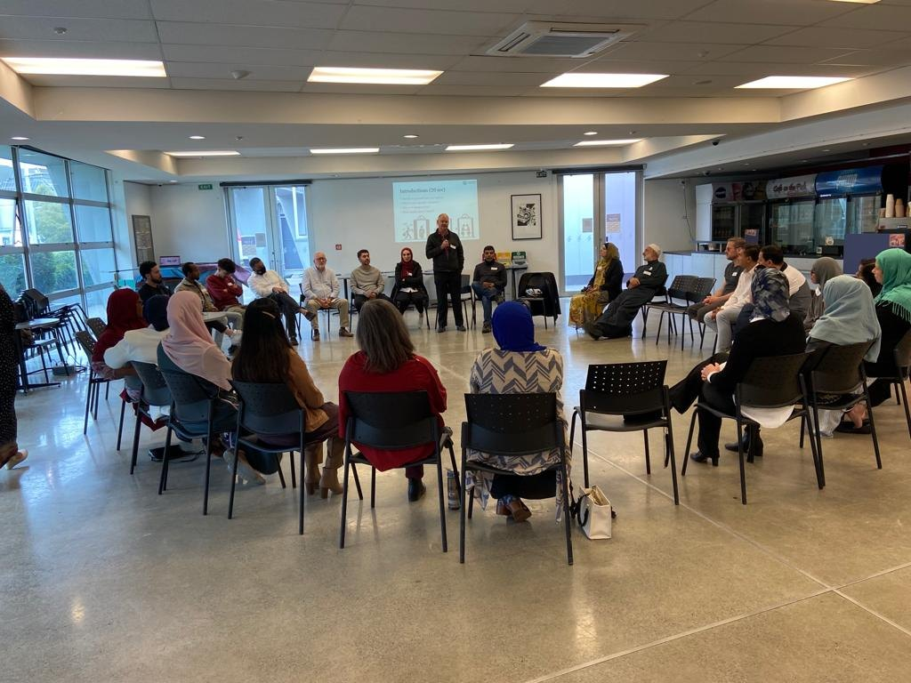
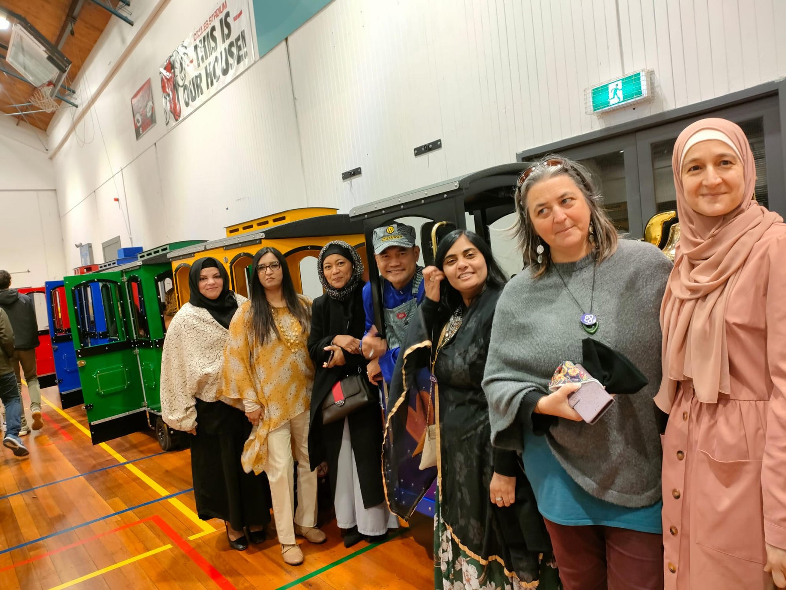
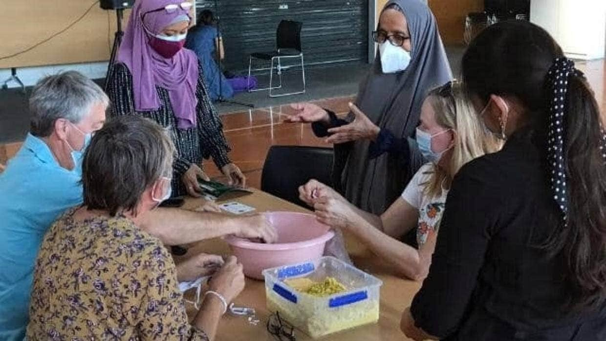
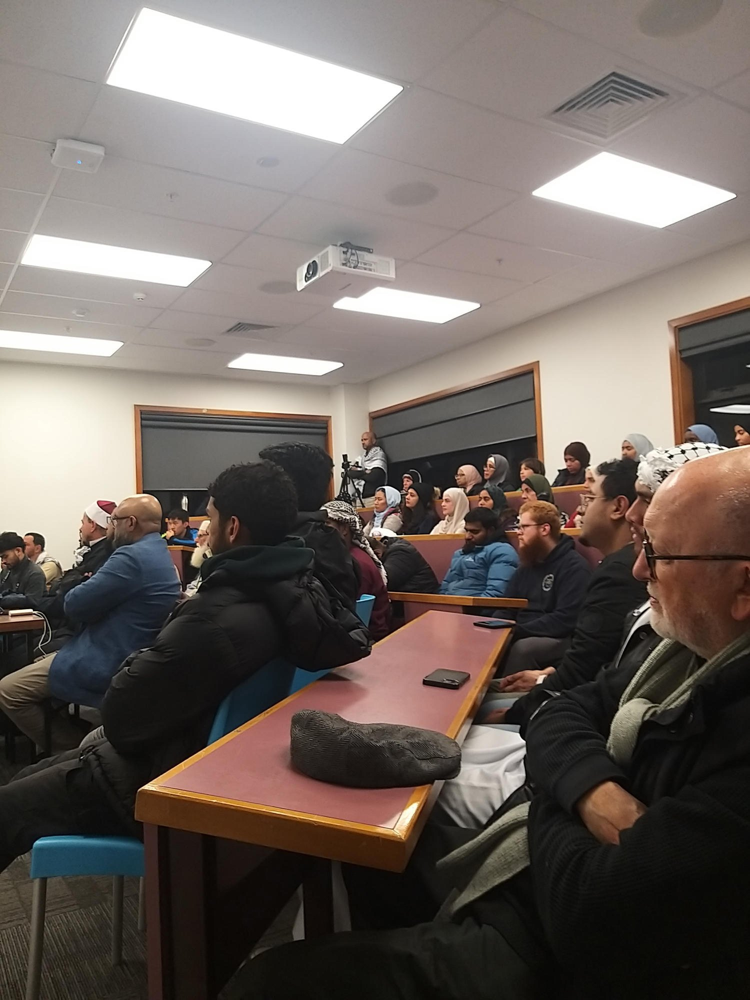

Our Events
Make time to come together.
Gatherings create room for conversation, understanding and connection. Find out what’s happening and how to be part of it.
Featured
A national invitation
Unity Week NZ
Launched in 2022, Unity Week NZ brings people together to reflect on the lessons of 15 March and build a more compassionate nation.
Explore Unity Week NZUpcoming events
What’s next?
—
Find out what’s coming up.
Visit Unity Week NZ for programme details, or contact Sakinah about other community gatherings.
Visit Unity Week NZPast gatherings
Past gatherings and community work.





Have a question about taking part?
Reach out to the Trust or find out about Unity Week NZ.